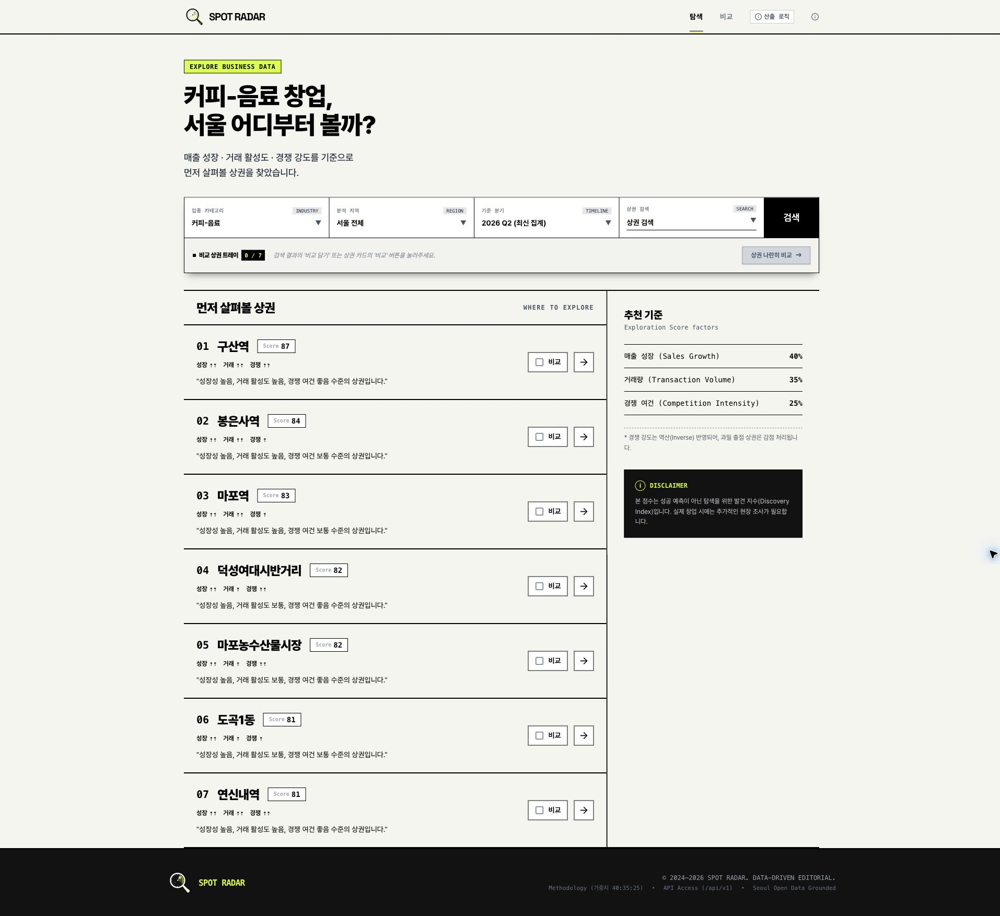
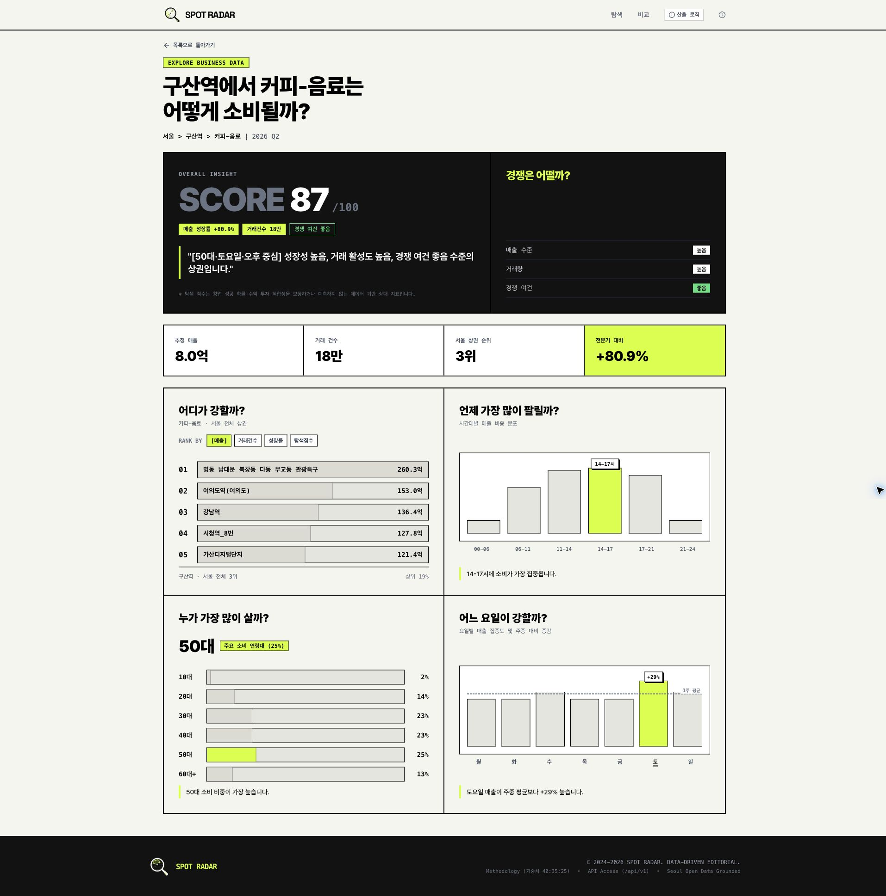
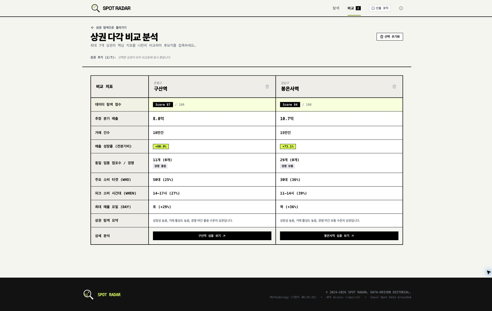

SPOT RADAR
도시를 설명하는 숫자는 무수히 많지만 어디를 먼저 살펴봐야 할지는 쉽게 드러나지 않습니다. 서울 상권의 지표와 소비 흐름을 나란히 놓아 직접 발걸음을 옮길 후보를 좁혀가는 서비스입니다.
프로젝트 정보
- 프로젝트
- 팀 프로젝트, 개인 후속 개선
- 기간
- 2026.09–10
- 기술
- Python, FastAPI, Java, Spring Boot, PostgreSQL, Spring Cache, Gemini
- 결과물
- 상권 탐색, 상세 분석, 후보 비교 서비스
프로젝트 개요
매출 수치 하나만으로는 조사할 상권을 고르기 어렵습니다. 사용자는 업종과,지역, 분기를 정해 후보를 찾고, 각 후보에 매출, 거래, 소비 패턴 및 경쟁 신호를 살펴본 뒤 경쟁 후보 최대 세 곳을 한 번에 비교할 수 있습니다. SPOT RADAR는 입지를 대신 결정하지 않고, 실제 현장 조사 전에 검토할 후보와 근거를 모아 보여줍니다.
사용자가 할 수 있는 일
- 상권 후보 탐색
업종, 지역, 분기를 선택해 상권을 찾고 순위, 추천 이유, 위험 요소를 확인합니다.
- 상세 지표 확인
상권별 매출과 거래, 순위, 성장 정보 및 시간대와 연령, 요일별 소비 패턴을 살펴봅니다.
- 후보 비교
최대 세 곳을 골라 같은 지표를 나란히 비교합니다.
실제 화면
탐색에서 후보 비교까지 사용자가 상권을 좁혀 가는 화면 세 장입니다.



시스템 구조
사용자 요청
탐색, 상세, 비교 경로
상권 API와 추천 지표 계산
상권, 매출, 점포 정보
분기별 데이터 갱신
분기별 매출과 점포 정보
매출과 점포 데이터 적재
동기화한 데이터 저장
GitHub Actions가 동기화 작업을 예약하거나 수동으로 시작합니다.
선택적 인사이트 생성
검증된 지표를 바탕으로 결과 안내
지표에 대한 설명
Gemini 연동이 꺼져 있거나 호출에 실패하면 규칙 기반 안내를 반환합니다.
제가 맡은 일
팀 프로젝트 기여
서울 Open API 데이터 적재와 upsert, Gemini 인사이트 수치 검증, DB 연결과 예외 처리, 회귀 테스트를 맡았습니다. 설계, API, 문제 분석을 다룬 프로젝트 문서 대부분을 작성했습니다. 초기 UI 뼈대에는 Stitch 시안을 바탕으로 Google AI Studio로 생성했습니다.
개인 후속 개선
개인 저장소에서 기존 화면과 API 응답 형식을 유지하며 FastAPI를 Spring Boot로 옮겼습니다. Native SQL 결과는 필드 이름으로 읽는 Projection으로 바꾸고 반복 조회는 메모리 캐시로 줄였습니다.
점수 계산과 화면 조회 범위를 분리
추천 점수는 모집단 데이터를 바탕으로 계산하되 화면에 표시할 상권 기본 정보는 상위 후보만 다시 조회하도록 바꿨습니다. 이 경계 덕분에 점수 계산에 필요한 데이터는 유지하면서 카드 표시용 조회는 줄였습니다.
List<String> topCodes = population.stream()
.filter(row -> row.explorationScore() != null)
.sorted(Comparator.comparing((MetricRow row) -> row.explorationScore())
.reversed()
.thenComparing(row -> row.tradeAreaCode()))
.limit(7)
.map(row -> row.tradeAreaCode())
.toList();
// 점수 계산용 모집단은 유지하고, 화면에 보여줄 기본 정보만 상위 후보로 제한합니다.
areaByCode = areas.findAllById(topCodes).stream()
.collect(Collectors.toMap(
area -> area.getCode(),
area -> area));
추천 뒤 기본 상권 정보 조회량 평균이 1,650건에서 7건으로 줄었습니다.
Repository 조회 구간과 API 응답을 분리해 확인했습니다. 조회 범위 개선과 캐시 적용은 서로 다른 단계에서 측정했습니다.
확인한 결과와 배운 점
추천 뒤 기본 상권정보를 조회한 평균 건수입니다. 지표 계산에 쓰는 모집단 조회까지 7건으로 줄었다는 의미는 아닙니다.
조회 범위 개선 전후 추천 API 평균 응답 시간입니다. 캐시 적용 결과와 분리해 측정했습니다.
Render 무료 단일 인스턴스에서 측정한 캐시 미적중과 적중 응답 시간입니다.
처음 팀 작업에서는 일정이 촉박해 뷰 기반 처리와 Redis 같은 외부 캐시를 검토해보았지만, 구현에 옮기지는 못했습니다. 개인적인 후속 개발로 마이그레이션을 진행할 때는 Redis 사용 경험이 적어 반려하고, Render 무료 인스턴스 하나에서 변경을 작게 유지하려고 Spring Cache의 메모리 구현을 택했습니다. 별도 캐시 서버 없이 반복 데이터를 재사용하는 대신, 프로세스 재시작 때 비워지고 현재 구현에는 TTL·크기 제한·무효화 경로가 없습니다. 측정 조건과 판단 과정은 상세 글에 정리했습니다.